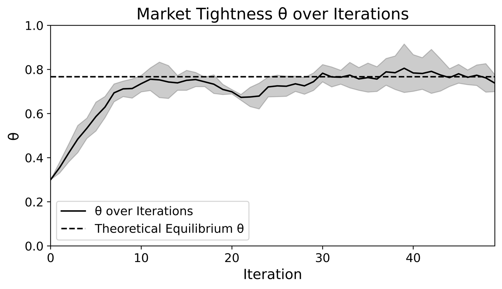
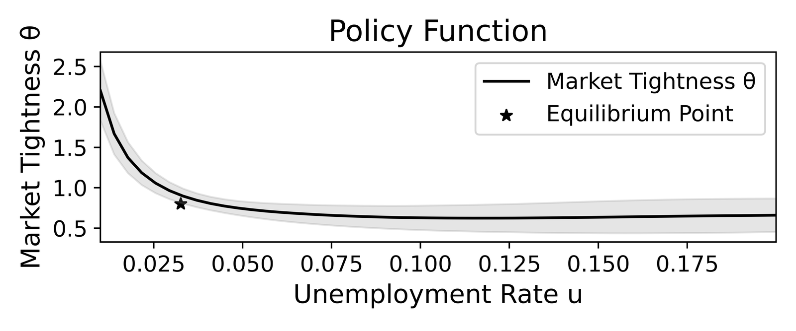

摘要
将强化学习（RL）应用于经济建模时暴露出一个根本性矛盾：标准的 RL 智能体并不表现为竞争性的价格接受者。宏观经济模型通常假设主体把总体条件视为给定，而朴素的单智能体 RL 算法会学会考虑自身对环境的影响，实际上行使了市场势力。我们在一个具有凹生产函数的搜寻匹配模型中说明了这种偏离：标准 RL 智能体收敛到买方垄断配置，而不是竞争均衡。此外，我们还表明，RL 处理时间折现的方式会扭曲标准的跨期经济权衡。为解决这些问题，我们提出校准的平均场强化学习框架：它限制智能体针对外生的总体状态进行优化，以恢复价格接受行为，并重新校准 RL 的奖励结构，使其反映真实的经济机会成本。通过迭代更新总体状态，算法收敛到一个平稳不动点，从而恢复竞争均衡。该方法为在动态一般均衡模型中嵌入学习算法提供了一种途径。
问题
我们研究一个具有凹生产函数的搜寻匹配劳动力市场。企业以每期成本 c 发布职位空缺；空缺被填补的速度取决于市场紧度 θ = v/u，工资通过议价决定。在经济模型中，企业是原子式的，把 θ 视为给定。
在同一环境中训练的单个 RL 智能体则不同，原因有两点。
- 结构性偏差。智能体发现自己发布的空缺会改变 θ，进而改变工资，于是学会像买方垄断者一样行事。
- 参数性偏差。在经济模型中，企业的创造就业条件按利率和离职率对空缺成本加权。RL 的折扣因子无法体现这种资本机会成本，因此智能体错误估计了空缺的成本。
训练后的智能体使市场紧度维持在 0.1 左右，远低于理论均衡值 0.78。
 图 1. 朴素 RL 仿真。左：训练过程中的奖励。右：训练过程中的市场紧度 θ 与理论均衡值的比较。阴影为五次独立运行的标准差。
图 1. 朴素 RL 仿真。左：训练过程中的奖励。右：训练过程中的市场紧度 θ 与理论均衡值的比较。阴影为五次独立运行的标准差。
方法
校准的平均场强化学习同时修正这两种偏差。平均场形式消除结构性偏差：智能体代表众多原子式企业中的一个，针对给定的总体状态进行优化，因此自身行为无法改变市场紧度。将奖励中的空缺成本 c 替换为反映资本机会成本的有效成本 ceff，可以消除参数性偏差。算法的迭代步骤如下：
- 初始化总体市场紧度 θ(0)。
- 给定 θ(k)，用 DDPG 训练智能体，奖励中使用 ceff。
- 根据学到的策略更新总体状态，得到 θ(k+1)。
- 重复上述步骤，直到总体状态与策略相互一致，即达到不动点。
结果
同时使用两种修正后，市场紧度收敛到理论均衡值。

图 2. 同时使用两种修正时，市场紧度 θ 随平均场迭代的变化，并与理论均衡值比较。阴影为五次独立运行的标准差。
只修正一种偏差是不够的。只做结构性修正时，智能体低估空缺成本，导致过度雇佣；只做参数性修正时，智能体仍会操纵市场。
 图 3. 只做结构性修正（左）和只做参数性修正（右）时的市场紧度 θ。
图 3. 只做结构性修正（左）和只做参数性修正（右）时的市场紧度 θ。
同时使用两种修正学到的策略把失业率映射为市场紧度，并经过理论稳态（u = 0.033，θ = 0.78）附近。

图 4. 学到的策略函数：市场紧度 θ 与失业率 ut 的关系。星号表示理论稳态 (0.033, 0.78)。阴影为五次独立运行的标准差。